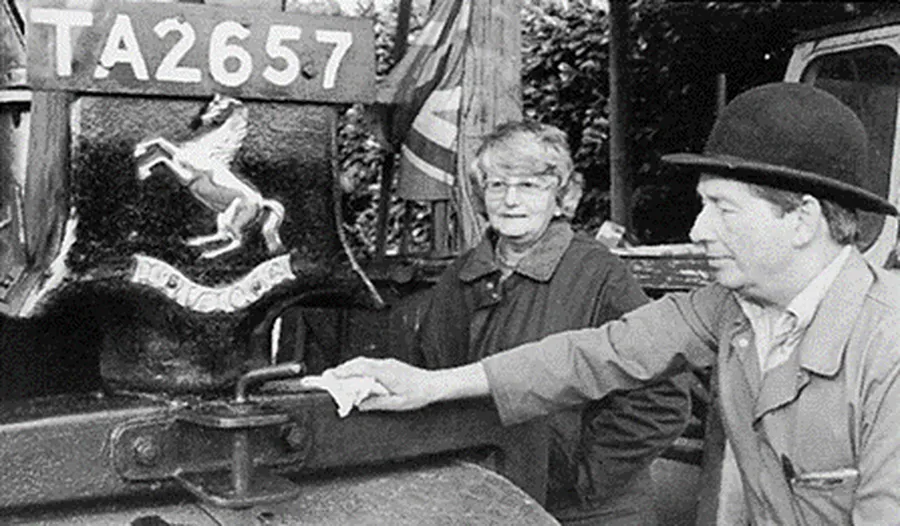
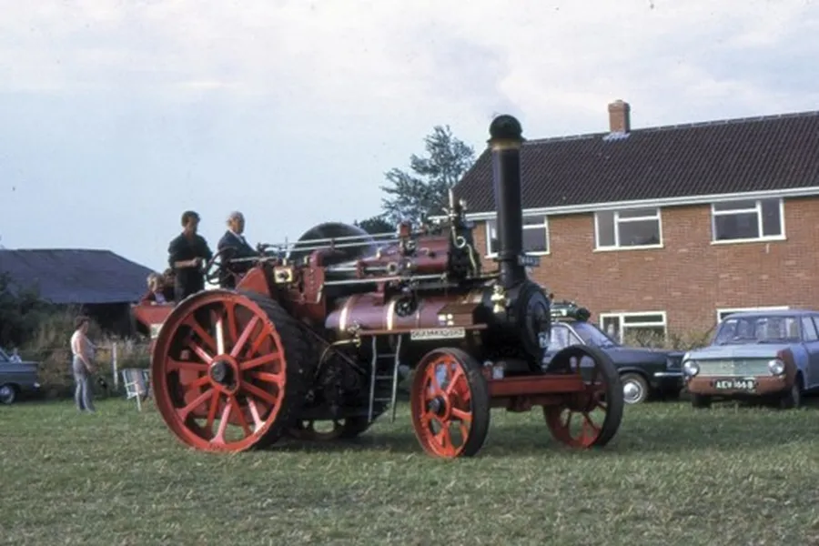
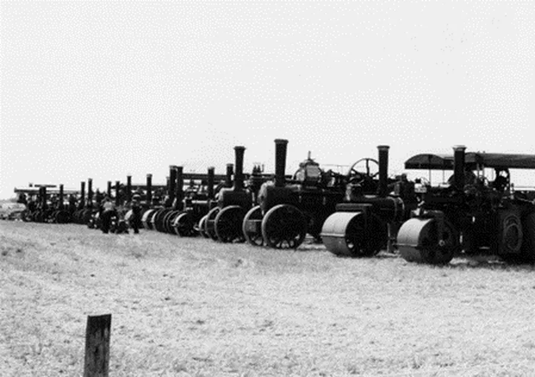
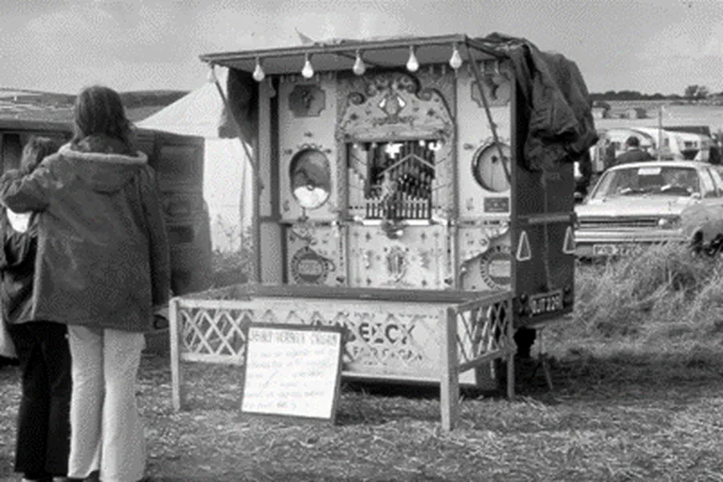
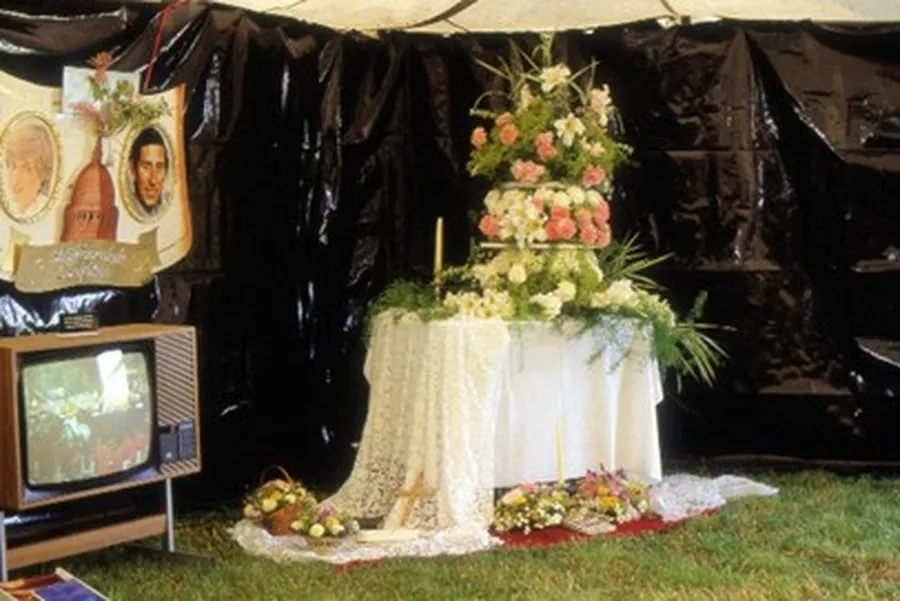
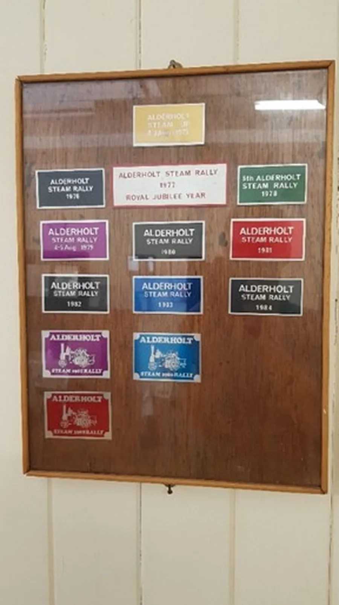
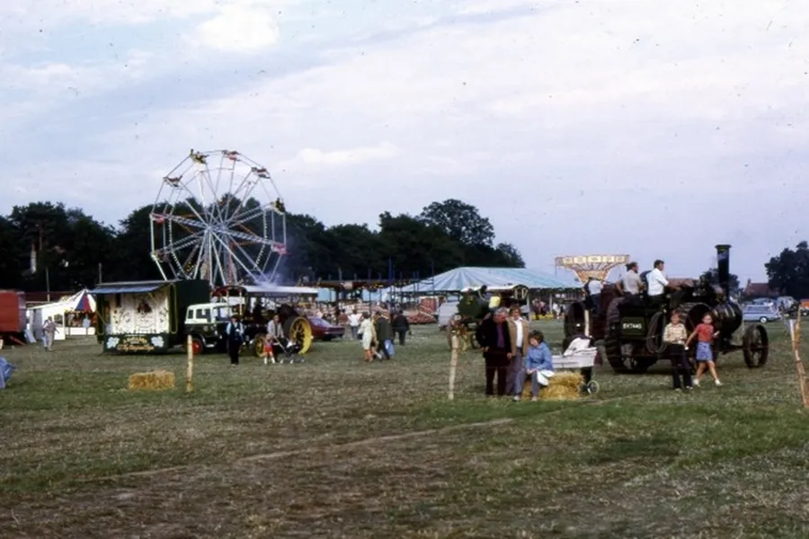

Alderholt Steam Rally
by Adrian King

This was an annual event that occurred in the village between the years 1972 – 1988. Affectionately known as the Steam Up this rally started with the request from the Village Hall Committee to the Dramatic and Musical Club that they should help to raise funds to purchase a storage shed for the Hall.
When the Dramatic Club met Mrs Barbara Hood proposed that a Steam Up should be run with the help of the club members. This first event was run on a Saturday afternoon at her home Fernlea in Camel Green.

The event was very successful and enough funds were made to enable the purchase of the storage shed. By popular request a further one-day event was staged on a Saturday afternoon the following year this time at the Parish Allotment field in Hillbury Road. The organisations that benefited from this rally were Fordingbridge Infirmary, Highfield Cottage Hospital and the Village Hall.
After two years of rallies the village had come to expect an annual function of this nature. Village clubs and organisations that were interested met at a special meeting and agreed that they would all help in organising the running of a steam rally as a two-day event. The reasons for this were economic because more exhibitors would support a two-day event. People came forward to guarantee the Rallies and it was decided to hold them as near as possible to the first full weekend of August.

The Rally also became affiliated to the National Traction Engine Club of Great Britain. One of the benefits of belonging to this organisation was that the Rally was advertised in all parts of the world where there was an interest in steam so the Rally sometimes had a number of international exhibitors.
The Steam Rally ran for a number of years in fields around the village until land was no longer available. Most years a Rally had been prepared but there was no field available to hold it until the last moment. In 1979 the Rally was held at Hucklesbrook Farm on the A338 midway between Fordingbridge and Ringwood. The following year it moved to Plumley Farm on the Somerley Estate where it remained until 1985. The last Rallies were held in the show ground at Godshill.

Adverse weather during the early part of August caused the event to have its ups and downs. The last Rally held at Plumley Farm was a disaster because of the very wet weather.
But it did prove a benefit to the village clubs and organisations that supported it because it provided an extra income for them. It was in 1988 that the Rally Committee decided to call it a day and close the event. That last Rally was very successful because of lovely weather of that weekend, and it went out on a high note. £12,000 was distributed among the village clubs and organisations whose members had made the running of the events possible.

In about 1978 local churches were asked to provide a rest tent. A committee was formed and provided this amenity for the next ten years. Alderholt, Crendell, Cripplestyle, The Tabernacle and Stuckton provided committee members. There were topical displays and children’s programmes over the weekend of the rally.
In 1981 the Rest Tent did a floral display in celebration of the marriage of Charles Prince of Wales to Diana Spencer.

Alderholt Steam Rally Venues
| 1972 | Fernlea, Camel Green |
| 1973 | Allotment field, Hillbury Road |
| 1974-75 | Ringwood Road, Alderholt |
| 1976 | Alderholt Mill |
| 1977 | Wheelers Cottage, Sandleheath Road< |
| 1978 | Ringwood Road, Alderholt |
| 1979 | Hucklesbrook Farm on A338 |
| 1980-85 | Plumley Farm |
| 1986 | Godshill Showground |
| 1987 | No Rally |
| 1988 | Godshill Showground |
| Compiled from A Century of Service, Alderholt Parish Council 1894 – 1994 | |

